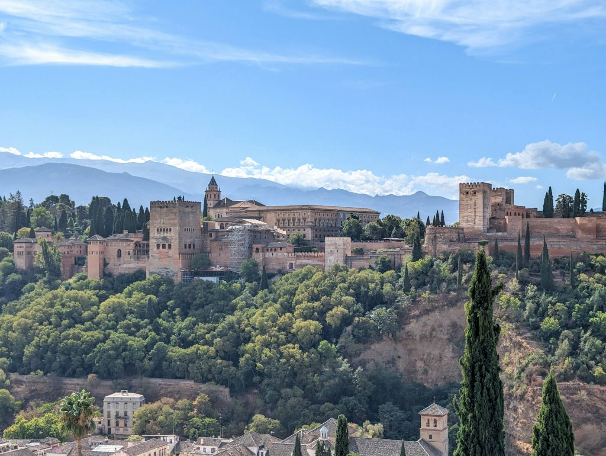
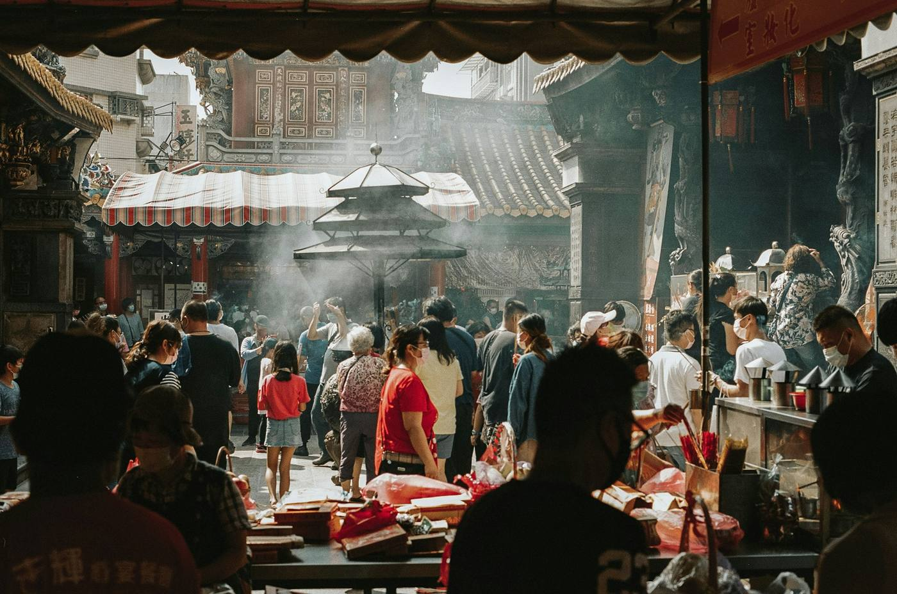
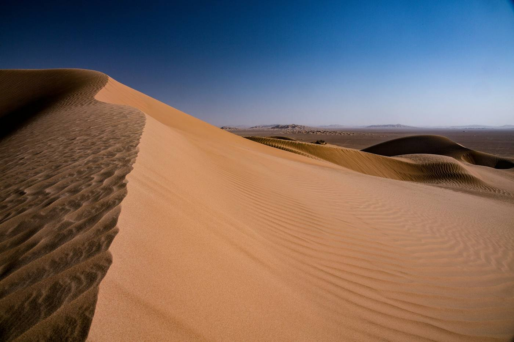
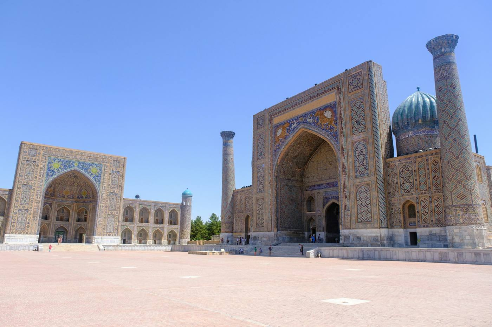
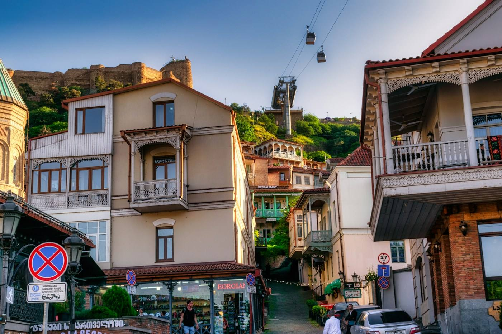

사진 · David Vives / Unsplash
사진 · Eagan Hsu / Unsplash
사진 · Tanja Cotoaga / Unsplash
사진 · Far Chinberdiev / Unsplash
사진 · UnsplashEXPLORE THE NEXT CHAPTER01 / 05
HISTORY IS NOT BORING ✳ 3–10 TRAVELERS ✳ LESS TOURISM, MORE FEELING ✳ 40 JOURNEYS IN 5 YEARS ✳ HISTORY IS NOT BORING ✳ 3–10 TRAVELERS ✳ LESS TOURISM, MORE FEELING ✳ 40 JOURNEYS IN 5 YEARS ✳
CURATED JOURNEYS / 001—010평범하지 않은
평범하지 않은
열 개의 지도.
역사 유적은 깊게, 여행은 가볍게. 매 코스마다 문화 공간과 로컬 미식, 기억에 남을 특별한 체험을 담았습니다. 모든 날짜는 출발 후보일입니다.
※ 여행상품은 기획 단계의 후보 코스입니다. 출발일, 호텔, 항공, 입장료, 식당 및 체험은 운영 확인 후 최종 확정됩니다. 관심 신청은 결제·예약 확정이 아닙니다.
RUN THE MAP / NEW지도 위를
지도 위를
달리는 여행.
돌로미티 선셋 10K, 몽블랑 일주, 앙코르와트 앞 10K, 구마노 고도 순례길. 해외 러닝·트레킹 대회에 3~10명이 같이 나가고, 끝나면 그 도시를 같이 여행해요. 경비는 거의 원가 그대로.
코스를 불러오는 중이에요.
OUR PHILOSOPHY
01 / 03
01 / 03
정답을 알려주기보다,
함께 질문하고
배우는 여행.
정해진 장소를 빠르게 찍고 이동하지 않습니다. 역사적인 장소 두 곳 이상, 미술관이나 박물관, 작은 맛집 두 곳, 달콤한 휴식, 그리고 예상 밖의 체험 하나. 혼자만의 시간도 일정에 남겨둡니다.
03—10
적은 인원으로 여유 있게
02+
각 여행의 역사적 장소
01
기억에 남을 특별한 경험
THE EDITOR / 시간을 달리는 여행자역사는 전공했고,
역사는 전공했고,
길 잃기는
계속 배우는 중.
안녕하세요, 주인장 준준입니다. 역사학을 전공했습니다. 과거를 공부하다 보니 현재의 제가 자꾸 공항에 있더군요. 최근 5년, 해외여행 약 40회. 여권은 두꺼워졌고, 확신은 조금 가벼워졌습니다.
여행에서 배운 건 거창한 정답보다 작은 질문입니다. 왜 이 골목은 휘었을까. 왜 이 도시는 저녁에 더 다정할까. 그리고 어째서 돌아오는 캐리어는 늘 닫히지 않을까. 유적의 연도 옆에 오늘 먹은 빵의 맛도 적어두는 사람입니다.
앞으로의 인생도 여행으로 설계하려 합니다. 목적지를 촘촘히 채우기보다, 마음이 움직이는 방향을 살피면서요. 함께 걷되 서로의 속도는 존중하는 여행. 그 여백에 다음 이야기를 남겨봅시다.
저는 인솔자나 전문 가이드가 아닙니다. 함께 배우며 여행을 갑니다. 역사학을 공부한 한 사람의 호기심을 보태고, 서로의 취향과 발견을 나누는 동행을 지향합니다.
MOVING POSTCARDS / 인생준준
여행의 장면들.
직접 걸었던 여행을 영상으로 만납니다. 아래 세 편은 인생준준 채널에 게시된 영상을 확인해 골랐습니다.
리스본에서 1시간, 바다 쪽으로
리스본에서 1시간, 이 바다 모르면 손해,현지인만 아는 근교 바다
YouTube에서 보기스페인, 다음 골목의 발견
스페인에서 한국인들이 절대 안 가는 '진짜' 숨은 보석 도시
YouTube에서 보기싱가포르, 한 접시의 호기심
관광객은 모르는 싱가포르 로컬 맛집… 이 음식 정체가 뭐야?
YouTube에서 보기재생을 누르면 YouTube 외부 플레이어가 로드됩니다. 재생이 제한되면 YouTube에서 보기를 이용해주세요.
MARGIN JOURNAL / VOL. 01 / 2026.10.23착륙 전,
착륙 전,
한 페이지 더.
도시의 역사와 여행자의 사소한 발견 사이. 창가 좌석에서 펼쳐 읽는 여백의 지도 편집실.
사마르칸트,
파란색에도 교차로가 있다
지도를 접으면 도시 하나. 시간을 펼치면 여러 세계.
사마르칸트는 문화가 만나고 섞인 실크로드의 도시다. 특히 14~15세기 티무르 시대에 크게 발전했다. 레기스탄과 샤히진다, 울루그베크 천문대는 이 도시의 서로 다른 표정을 보여준다.
칼럼 계속 읽기
이름을 외우느라 풍경을 놓치지 말자. 건물 하나를 보고, 조금 물러서서 그 사이의 공간을 본다. 도시의 역사는 거대한 정면뿐 아니라 사람들이 오가던 빈자리에도 남는다.
이번 여행 노트의 질문은 간단하다. 이곳에는 어떤 사람들이 어떤 말을 들고 왔을까. 정답을 찾기보다 그 질문을 품고 걷는 동안, 유적은 시험 범위에서 산책의 상대가 된다.
편집실 메모: 레기스탄·샤히진다·천문대를 한 번에 정복하려 하기보다 주제별로 나누어 보자. 운영 시간과 입장 조건은 방문 전 공식 안내에서 확인한다.
역사 사실 참고: UNESCO 세계유산센터 ↗일정표의 빈칸은
누락이 아닙니다
하루에 명소 다섯 개. 기억에 남은 건 길가의 의자 하나.
여행 계획을 짜다 보면 빈칸이 불안해진다. 항공권도 샀고 멀리도 왔으니 무엇이든 더 넣어야 할 것 같다. 하지만 일정표는 영수증이 아니다. 빈틈없이 채웠다고 여행의 값어치가 높아지지는 않는다.
칼럼 계속 읽기
한 장소에서 조금 더 머무르는 연습을 해보자. 사진을 찍은 뒤 휴대전화를 넣고, 안내판을 읽은 뒤 다시 건물을 본다. 첫인상 뒤에 두 번째 인상이 도착할 시간을 주는 것이다.
역사 유적 한 곳과 식사 한 끼 사이에 자유 시간을 남겨보면 어떨까. 계획 밖의 발견을 강요할 필요도 없다. 아무 일 없이 커피가 식어도 괜찮다. 쉬는 것도 낯선 도시에서만 가능한 방식의 경험이다.
다음 여행 노트: 오늘 가장 오래 바라본 장면을 한 줄로 적기. 명소 이름이 아니어도 좋다. 여행의 결산은 방문 개수가 아니라 기억의 문장으로 해보자.
매주 월·수·금 오전 9시, 새로운 여행 칼럼을 만납니다.
TRAVELERS' DESK다녀온 이야기,
다녀온 이야기,
떠나고 싶은 마음.
여행추천 · 여행 후기 · 여행문의. 다녀온 장면과 다음 목적지의 궁금증을 나눕니다. 등록한 글은 다른 여행자에게 공개됩니다.
내 여행 이야기 작성하기
BEFORE YOU GO
자주 묻는 질문.
혼자 신청해도 괜찮나요?
네. 혼자 참여하는 분을 염두에 둔 3~10인 소규모 동행 여행입니다. 객실은 기본적으로 개별 객실 여부와 2인실 동반 사용 옵션을 분리해 안내할 예정이며, 객실 배정은 사전 동의 후 결정합니다.
여행비는 어떻게 구성되나요?
항공권, 3성급 이상 호텔, 현지 교통·입장료·식사 등 실제 여행비와 공동 여행 준비·운영 예상비를 구분해 안내합니다. 항공권과 호텔의 실제 가격·등급·객실 유형에 따라 총액이 변동됩니다. 견적은 예약 확정 전 다시 확인합니다.
인솔자나 전문 가이드가 함께하나요?
주인장은 인솔자나 전문 가이드가 아닙니다. 함께 배우며 여행을 가는 동행입니다. 방문할 장소의 자료를 함께 살펴보고, 각자가 발견한 이야기와 질문을 나눕니다. 전문 해설이나 인솔 서비스를 제공하는 여행으로 안내하지 않습니다.
지금 결제하거나 예약할 수 있나요?
현재는 기획·관심 신청 단계입니다. 여행업 등록·제휴·보험·약관 및 개별 상품 운영 조건을 확인하기 전에는 결제나 확정 예약을 받지 않습니다. 문의 폼으로 보낸 내용은 운영자 메일로 바로 전달되고, 답장은 이메일로 드려요.
특별 체험이 날씨 때문에 취소되면요?
사막 4WD, 협곡 산책, 케이블카, 보트 등의 체험은 계절·안전·운영 여부에 따라 조정됩니다. 각 여행 상세페이지에 대체 일정을 표시하며, 실제 계약 시 취소·환불 기준을 별도로 고지합니다.
YOUR NEXT STORY STARTS HERE다음 여행의
다음 여행의
첫 번째 사람.
마음에 드는 여행을 발견했다면,
여기서 바로 이야기를 남겨주세요.
- 01관심 여행과 궁금한 점을 작성해요.
- 02보내기를 누르면 바로 접수돼요.
- 0324시간 안에 이메일로 답장드려요.
관심 신청은 결제나 예약 확정이 아닙니다.
여행 일정과 출발 여부는 상담 후 별도로 안내합니다.
TELL US YOUR NEXT JOURNEY
어디로 떠나고 싶으세요?
내용을 확인하고 문의를 보내주세요.
복사한 내용을 DM 또는 카카오톡 대화창에 붙여넣어 보내주세요. 이메일에는 내용이 미리 채워집니다.